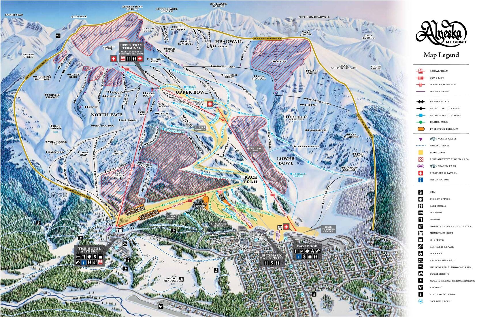

Alyeska Resort

Map of Alyeska's trails
Overview
Alyeska was by far my favorite place to ever snowboard at. The scenery is awe inspiring from the top of the mountain which overlooks the Turnagain Arm. At the base of the mountain you can go left for beginner green trails and the terrain park. If you go right a primary lower lift takes you halfway up the mountain and a secondary lifts takes you to the top of the mountain. There's a wide variety of blue runs at the first stop and a good selection of black and double black runs from the top.
Tips
- The lift to the right of the lodge leads to only blue runs which would be a struggle for beginners
- The double black diamond runs are challenging even for experienced snowboarders and skiers.
- Alyeska is EXPENSIVE and also about 40 minutes from Anchorage. In other words it's pretty much in the middle of nowhere.
For more information: Alyeska official website